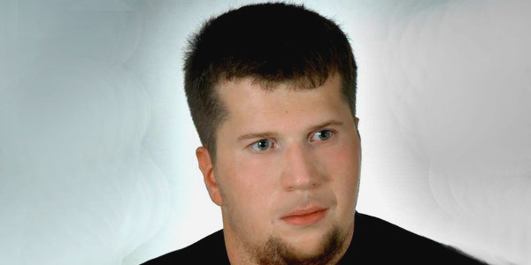

Mieszkańcem Ursusa jestem od urdzenia i jestem z tego dumny
Mieszkać w tak wspaniałym miejscu z tak bogatą historią to przywilej
Wojciech Jacek Skorupski

Dane ogólne
- Data urodzenia: 09.06.1991
- Miejsce urodzenia: Warszawa
Vivamus nec odio ac ligula congue feugiat at vitae leo. Aenean sem justo, finibus sed dui eu, accumsan facilisis dolor. Fusce quis dui eget odio iaculis aliquam vel sed velit. Nulla pellentesque posuere semper. Nulla eu sagittis lorem, a auctor nulla. Sed ac condimentum orci, ac varius ante. Nunc blandit quam sit amet sollicitudin sodales.
Wykształcenie
Vivamus ultricies mollis mauris quis molestie. Quisque eu mi velit. In et cursus nibh. Donec facilisis, orci sed mollis hendrerit, nunc risus mattis odio, eget efficitur nisl orci a lectus. Aenean finibus neque convallis orci sollicitudin tincidunt. Vivamus lacinia facilisis diam, quis facilisis nisi luctus nec. Aliquam ac molestie enim, ut ultrices elit. Fusce laoreet vulputate risus in tincidunt. Sed commodo mollis maximus. Nullam varius laoreet nibh sit amet facilisis. Donec ac odio vehicula, consequat elit et, sodales justo. Vestibulum ante ipsum primis in faucibus orci luctus et ultrices posuere cubilia Curae; Nullam ac auctor mauris, in hendrerit libero.
Znajomość języków obcych
Vivamus ultricies mollis mauris quis molestie. Quisque eu mi velit. In et cursus nibh. Donec facilisis, orci sed mollis hendrerit, nunc risus mattis odio, eget efficitur nisl orci a lectus. Aenean finibus neque convallis orci sollicitudin tincidunt. Vivamus lacinia facilisis diam, quis facilisis nisi luctus nec. Aliquam ac molestie enim, ut ultrices elit. Fusce laoreet vulputate risus in tincidunt. Sed commodo mollis maximus. Nullam varius laoreet nibh sit amet facilisis. Donec ac odio vehicula, consequat elit et, sodales justo. Vestibulum ante ipsum primis in faucibus orci luctus et ultrices posuere cubilia Curae; Nullam ac auctor mauris, in hendrerit libero.
Zatrudnienie
- Urząd Dzielnicy Ursus m. St. Warszawy: Referent w Wydziale Spraw Społecznych i Zdrowia
- BRW Business Travel: Agent Biura Podróży
- Groupon Shared Services: Specjalista ds. Zarządzania Treścią
- Pierwsza Pomoc Przedmedyczna
- Polityka Lokalna
- Literatura, Muzyka, Teatr
- Historia, Kultura Średniowiecznej Europy
- Gry Planszowe, Karciane i Komputerowe
Vivamus ultricies mollis mauris quis molestie. Quisque eu mi velit. In et cursus nibh. Donec facilisis, orci sed mollis hendrerit, nunc risus mattis odio, eget efficitur nisl orci a lectus. Aenean finibus neque convallis orci sollicitudin tincidunt. Vivamus lacinia facilisis diam, quis facilisis nisi luctus nec. Aliquam ac molestie enim, ut ultrices elit. Fusce laoreet vulputate risus in tincidunt. Sed commodo mollis maximus. Nullam varius laoreet nibh sit amet facilisis. Donec ac odio vehicula, consequat elit et, sodales justo. Vestibulum ante ipsum primis in faucibus orci luctus et ultrices posuere cubilia Curae; Nullam ac auctor mauris, in hendrerit libero.
Zainteresowania
Vivamus ultricies mollis mauris quis molestie. Quisque eu mi velit. In et cursus nibh. Donec facilisis, orci sed mollis hendrerit, nunc risus mattis odio, eget efficitur nisl orci a lectus. Aenean finibus neque convallis orci sollicitudin tincidunt. Vivamus lacinia facilisis diam, quis facilisis nisi luctus nec. Aliquam ac molestie enim, ut ultrices elit. Fusce laoreet vulputate risus in tincidunt. Sed commodo mollis maximus. Nullam varius laoreet nibh sit amet facilisis. Donec ac odio vehicula, consequat elit et, sodales justo. Vestibulum ante ipsum primis in faucibus orci luctus et ultrices posuere cubilia Curae; Nullam ac auctor mauris, in hendrerit libero.